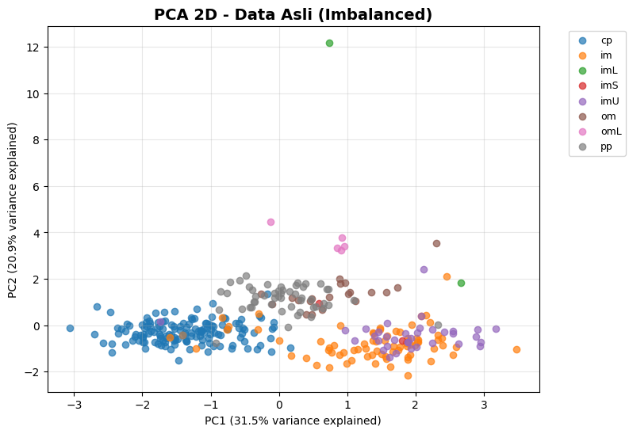
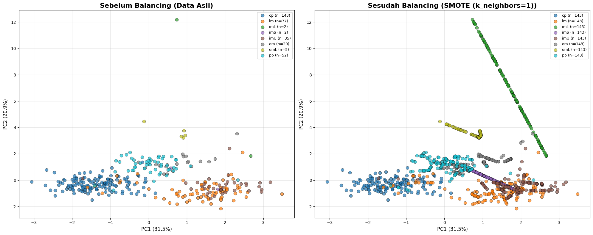
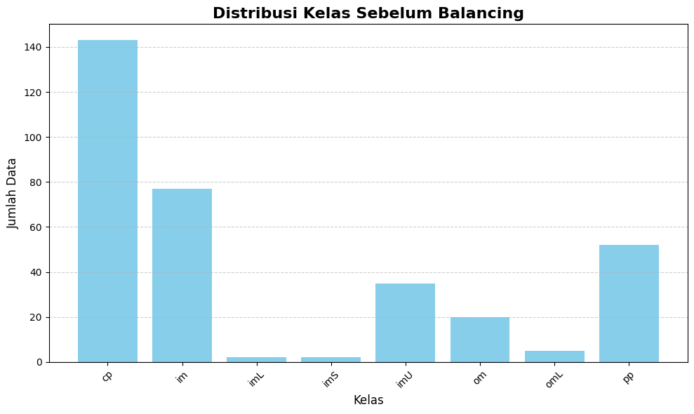
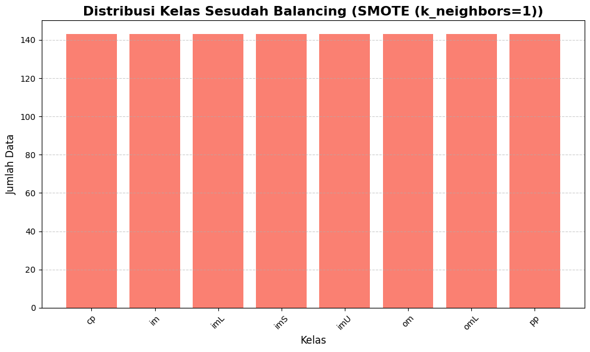

Oversampling#
Install Library#
!pip install pandas matplotlib scikit-learn imbalanced-learn
Requirement already satisfied: pandas in /usr/local/python/3.12.1/lib/python3.12/site-packages (2.1.4)
Requirement already satisfied: matplotlib in /usr/local/python/3.12.1/lib/python3.12/site-packages (3.7.5)
Requirement already satisfied: scikit-learn in /usr/local/python/3.12.1/lib/python3.12/site-packages (1.4.2)
Requirement already satisfied: imbalanced-learn in /usr/local/python/3.12.1/lib/python3.12/site-packages (0.14.0)
Requirement already satisfied: numpy<2,>=1.26.0 in /usr/local/python/3.12.1/lib/python3.12/site-packages (from pandas) (1.26.4)
Requirement already satisfied: python-dateutil>=2.8.2 in /home/codespace/.local/lib/python3.12/site-packages (from pandas) (2.9.0.post0)
Requirement already satisfied: pytz>=2020.1 in /home/codespace/.local/lib/python3.12/site-packages (from pandas) (2025.2)
Requirement already satisfied: tzdata>=2022.1 in /home/codespace/.local/lib/python3.12/site-packages (from pandas) (2025.2)
Requirement already satisfied: contourpy>=1.0.1 in /home/codespace/.local/lib/python3.12/site-packages (from matplotlib) (1.3.2)
Requirement already satisfied: cycler>=0.10 in /home/codespace/.local/lib/python3.12/site-packages (from matplotlib) (0.12.1)
Requirement already satisfied: fonttools>=4.22.0 in /home/codespace/.local/lib/python3.12/site-packages (from matplotlib) (4.58.5)
Requirement already satisfied: kiwisolver>=1.0.1 in /home/codespace/.local/lib/python3.12/site-packages (from matplotlib) (1.4.8)
Requirement already satisfied: packaging>=20.0 in /home/codespace/.local/lib/python3.12/site-packages (from matplotlib) (25.0)
Requirement already satisfied: pillow>=6.2.0 in /home/codespace/.local/lib/python3.12/site-packages (from matplotlib) (11.3.0)
Requirement already satisfied: pyparsing>=2.3.1 in /home/codespace/.local/lib/python3.12/site-packages (from matplotlib) (3.2.3)
Requirement already satisfied: scipy>=1.6.0 in /usr/local/python/3.12.1/lib/python3.12/site-packages (from scikit-learn) (1.11.4)
Requirement already satisfied: joblib>=1.2.0 in /usr/local/python/3.12.1/lib/python3.12/site-packages (from scikit-learn) (1.3.2)
Requirement already satisfied: threadpoolctl>=2.0.0 in /home/codespace/.local/lib/python3.12/site-packages (from scikit-learn) (3.6.0)
Requirement already satisfied: six>=1.5 in /home/codespace/.local/lib/python3.12/site-packages (from python-dateutil>=2.8.2->pandas) (1.17.0)
Load Dataset#
import pandas as pd
# Load CSV
df = pd.read_csv("ecoli2.csv")
print()
print("="*80)
print(df.head())
print("="*80)
# Pisahkan fitur & target
X = df[["mcg", "gvh", "lip", "chg", "aac", "alm1", "alm2"]]
y = df["localization_class"].astype(str)
print()
print("="*60)
print("Shape fitur:", X.shape)
print("Shape target:", y.shape)
print("="*60)
print()
print("---Distribusi target:---\n")
print("="*60)
print(y.value_counts())
print("="*60)
================================================================================
id protein_name mcg gvh lip chg aac alm1 alm2 localization_class
0 1 AAT_ECOLI 0.49 0.29 0.48 0.5 0.56 0.24 0.35 cp
1 2 ACEA_ECOLI 0.07 0.40 0.48 0.5 0.54 0.35 0.44 cp
2 3 ACEK_ECOLI 0.56 0.40 0.48 0.5 0.49 0.37 0.46 cp
3 4 ACKA_ECOLI 0.59 0.49 0.48 0.5 0.52 0.45 0.36 cp
4 5 ADI_ECOLI 0.23 0.32 0.48 0.5 0.55 0.25 0.35 cp
================================================================================
============================================================
Shape fitur: (336, 7)
Shape target: (336,)
============================================================
---Distribusi target:---
============================================================
localization_class
cp 143
im 77
pp 52
imU 35
om 20
omL 5
imS 2
imL 2
Name: count, dtype: int64
============================================================
Standarisasi Fitur#
from sklearn.preprocessing import StandardScaler
import pandas as pd
print("\n>>> Melakukan standardisasi fitur...")
scaler = StandardScaler()
X_scaled = scaler.fit_transform(X)
# Cek hasil standardisasi (statistik ringkas)
X_scaled_df = pd.DataFrame(X_scaled, columns=X.columns)
print("\n=== Statistik setelah StandardScaler ===")
print(X_scaled_df.describe().T[["mean", "std"]])
print("\nContoh 5 baris pertama setelah scaling:")
print(X_scaled_df.head())
>>> Melakukan standardisasi fitur...
=== Statistik setelah StandardScaler ===
mean std
mcg 8.458842e-17 1.001491
gvh -4.229421e-17 1.001491
lip -6.767074e-16 1.001491
chg 1.797504e-16 1.001491
aac 8.458842e-17 1.001491
alm1 -1.691768e-16 1.001491
alm2 -4.863834e-16 1.001491
Contoh 5 baris pertama setelah scaling:
mcg gvh lip chg aac alm1 alm2
0 -0.051761 -1.419531 -0.175142 -0.054636 0.490781 -1.207717 -0.716084
1 -2.212876 -0.675967 -0.175142 -0.054636 0.327106 -0.697111 -0.285665
2 0.308424 -0.675967 -0.175142 -0.054636 -0.082081 -0.604273 -0.190016
3 0.462790 -0.067597 -0.175142 -0.054636 0.163431 -0.232923 -0.668259
4 -1.389594 -1.216741 -0.175142 -0.054636 0.408944 -1.161299 -0.716084
Encode Target Kelas#
LabelEncoder mengubah target string menjadi angka agar bisa digunakan algoritma ML. Dimana saya menampilkan mapping agar mudah diketahui kelas mana yang diwakili angka berapa.
from sklearn.preprocessing import LabelEncoder
# Encode target menjadi angka
le = LabelEncoder()
y_enc = le.fit_transform(y)
# Tampilkan mapping kelas
print("Mapping kelas ke angka:")
for cls, val in zip(le.classes_, range(len(le.classes_))):
print(f"{cls} -> {val}")
Mapping kelas ke angka:
cp -> 0
im -> 1
imL -> 2
imS -> 3
imU -> 4
om -> 5
omL -> 6
pp -> 7
PCA ke 2 Dimensi#
# ========================================
# PCA: Reduksi Dimensi 7D -> 2D
# ========================================
import matplotlib.pyplot as plt
import pandas as pd
from sklearn.decomposition import PCA
print("\n>>> Melakukan PCA reduksi dari 7D ke 2D ...")
# Inisialisasi PCA ke 2 komponen utama
pca = PCA(n_components=2, random_state=42)
X_pca = pca.fit_transform(X_scaled) # X_scaled = data fitur setelah standardisasi
# ------------------------------
# 1. Info Variansi
# ------------------------------
explained_var = pca.explained_variance_ratio_
total_var = explained_var.sum()
print("\nProporsi variansi yang dijelaskan tiap komponen:")
print(explained_var)
print(f"Total variansi yang dijelaskan: {total_var:.2%}")
# Buat tabel untuk ringkasan variansi
df_var = pd.DataFrame({
"Komponen": ["PC1", "PC2"],
"Explained Variance Ratio": explained_var
})
print("\nTabel variansi tiap komponen:")
print(df_var)
>>> Melakukan PCA reduksi dari 7D ke 2D ...
Proporsi variansi yang dijelaskan tiap komponen:
[0.31508933 0.20874152]
Total variansi yang dijelaskan: 52.38%
Tabel variansi tiap komponen:
Komponen Explained Variance Ratio
0 PC1 0.315089
1 PC2 0.208742
Scatter Plot PCA Data Asli#
# Plot hasil PCA
plt.figure(figsize=(8, 6))
for cls in range(len(le.classes_)): # le = LabelEncoder
plt.scatter(
X_pca[y_enc == cls, 0],
X_pca[y_enc == cls, 1],
alpha=0.7,
label=le.classes_[cls]
)
plt.title("PCA 2D - Data Asli (Imbalanced)", fontsize=14, fontweight="bold")
plt.xlabel(f"PC1 ({pca.explained_variance_ratio_[0]:.1%} variance explained)")
plt.ylabel(f"PC2 ({pca.explained_variance_ratio_[1]:.1%} variance explained)")
plt.legend(bbox_to_anchor=(1.05, 1), loc="upper left", fontsize=9)
plt.grid(True, alpha=0.3)

Menghitung jumlah sampel mayoritas & minoritas#
Hasilnya pada mayoritas dan minoritas ini untuk nilai 0 adalah label numerik untuk kelas mayoritas (y_enc), yang biasanya hasil dari LabelEncoder dan angka 143 adalah jumlah sampel di kelas mayoritas tersebut. Begitu juga pada nilai 2 adalah label numerik untuk kelas minoritas dan angka 2 juga adalah jumlah sampel di kelas minoritas.
Jadi 0 dan 2 bukan jumlah, tapi kode/label kelas.
import numpy as np
# Hitung jumlah tiap kelas
classes, counts = np.unique(y_enc, return_counts=True)
major_class = classes[np.argmax(counts)]
minor_class = classes[np.argmin(counts)]
print("Mayoritas:", major_class, counts.max())
print("Minoritas:", minor_class, counts.min())
# Total sampel sintetis yang akan dibuat
G = counts.max() - counts.min()
print("Jumlah sampel sintetis yang akan dibuat:", G)
Mayoritas: 0 143
Minoritas: 2 2
Jumlah sampel sintetis yang akan dibuat: 141
Melakukan penyeimbangan data menggunakan ADASYN/SMOTE#
Distribusi Awal#
# ========================================
# DISTRIBUSI AWAL
# ========================================
import pandas as pd
import numpy as np
print(">>> Mulai implementasi balancing data pada dataset E.coli")
print("\n=== DISTRIBUSI AWAL ===")
original_distribution = pd.Series(y).value_counts().sort_index()
print(original_distribution)
minority = original_distribution.min()
majority = original_distribution.max()
ratio = majority / minority
print(f"\nJumlah sampel terkecil: {minority}")
print(f"Rasio imbalance: {majority}/{minority} ≈ {ratio:.1f}:1")
>>> Mulai implementasi balancing data pada dataset E.coli
=== DISTRIBUSI AWAL ===
localization_class
cp 143
im 77
imL 2
imS 2
imU 35
om 20
omL 5
pp 52
Name: count, dtype: int64
Jumlah sampel terkecil: 2
Rasio imbalance: 143/2 ≈ 71.5:1
Mencoba Melakukan Balancing dengan ADASYN#
# ========================================
# BALANCING DENGAN ADASYN
# ========================================
from imblearn.over_sampling import ADASYN
import time
try:
print("\n>>> Mencoba ADASYN ...")
start = time.time()
adasyn = ADASYN(random_state=42, n_neighbors=1, sampling_strategy="not majority")
X_res_ada, y_res_ada = adasyn.fit_resample(X_scaled, y)
elapsed = time.time() - start
print(f"Sukses ADASYN (waktu {elapsed:.2f}s)")
dist_ada = pd.Series(y_res_ada).value_counts().sort_index()
print("\n=== DISTRIBUSI SETELAH BALANCING (ADASYN) ===")
print(dist_ada)
before = len(y)
after = len(y_res_ada)
generated = after - before
print("\n=== RINGKASAN ===")
print(f"Jumlah data sebelum : {before}")
print(f"Jumlah data sesudah : {after}")
print(f"Data synthetic : {generated} ({generated/after:.1%})")
except Exception as e:
print(f"ADASYN gagal: {e}")
>>> Mencoba ADASYN ...
ADASYN gagal: Not any neigbours belong to the majority class. This case will induce a NaN case with a division by zero. ADASYN is not suited for this specific dataset. Use SMOTE instead.
Mencoba Melakukan Balancing Dengan Smote#
# ========================================
# BALANCING DENGAN SMOTE
# ========================================
from imblearn.over_sampling import SMOTE
try:
print("\n>>> Mencoba SMOTE ...")
start = time.time()
smote = SMOTE(random_state=42, k_neighbors=1)
X_res_smote, y_res_smote = smote.fit_resample(X_scaled, y)
elapsed = time.time() - start
print(f"Sukses SMOTE (waktu {elapsed:.2f}s)")
dist_smote = pd.Series(y_res_smote).value_counts().sort_index()
print("\n=== DISTRIBUSI SETELAH BALANCING (SMOTE) ===")
print(dist_smote)
before = len(y)
after = len(y_res_smote)
generated = after - before
print("\n=== RINGKASAN ===")
print(f"Jumlah data sebelum : {before}")
print(f"Jumlah data sesudah : {after}")
print(f"Data synthetic : {generated} ({generated/after:.1%})")
except Exception as e:
print(f"SMOTE gagal: {e}")
>>> Mencoba SMOTE ...
Sukses SMOTE (waktu 0.01s)
=== DISTRIBUSI SETELAH BALANCING (SMOTE) ===
localization_class
cp 143
im 143
imL 143
imS 143
imU 143
om 143
omL 143
pp 143
Name: count, dtype: int64
=== RINGKASAN ===
Jumlah data sebelum : 336
Jumlah data sesudah : 1144
Data synthetic : 808 (70.6%)
Plotting Data Setelah Balancing dengan PCA#
# ========================================
# PLOTTING DATA SETELAH BALANCING (PCA)
# ========================================
import matplotlib.pyplot as plt
from sklearn.decomposition import PCA
print("\n>>> Visualisasi hasil balancing dengan PCA ...")
# Gunakan PCA yg sudah fit ke data asli
# (kalau belum ada, fit dulu di X_scaled)
pca = PCA(n_components=2, random_state=42)
pca.fit(X_scaled)
# Transform hasil balancing ke ruang PCA yang sama
X_resampled_pca = pca.transform(X_resampled)
# Ambil nama kelas unik
class_names = sorted(pd.Series(y_resampled).unique())
# Warna otomatis untuk tiap kelas
color_map = plt.cm.get_cmap("tab10", len(class_names))
plt.figure(figsize=(10, 7))
for idx, class_name in enumerate(class_names):
mask = (y_resampled == class_name)
plt.scatter(
X_resampled_pca[mask, 0],
X_resampled_pca[mask, 1],
c=[color_map(idx)],
label=f"{class_name} (n={np.sum(mask)})",
alpha=0.7,
s=60,
edgecolors="black",
linewidth=0.5
)
plt.title(f"Hasil PCA Setelah Balancing ({method_used})", fontsize=16, fontweight="bold")
plt.xlabel(f"PC1 ({pca.explained_variance_ratio_[0]:.1%} variance explained)", fontsize=12)
plt.ylabel(f"PC2 ({pca.explained_variance_ratio_[1]:.1%} variance explained)", fontsize=12)
plt.legend(loc="best", fontsize=9)
plt.grid(True, alpha=0.3)
plt.tight_layout()
plt.show()
>>> Visualisasi hasil balancing dengan PCA ...
---------------------------------------------------------------------------
NameError Traceback (most recent call last)
Cell In[11], line 16
13 pca.fit(X_scaled)
15 # Transform hasil balancing ke ruang PCA yang sama
---> 16 X_resampled_pca = pca.transform(X_resampled)
18 # Ambil nama kelas unik
19 class_names = sorted(pd.Series(y_resampled).unique())
NameError: name 'X_resampled' is not defined
Perbandingan Distribusi Kelas Sebelum dan Sesudah SMOTE#
import numpy as np
import pandas as pd
import matplotlib.pyplot as plt
from imblearn.over_sampling import SMOTE
# Oversampling dengan SMOTE
smote = SMOTE(random_state=42, k_neighbors=1)
X_smote, y_smote = smote.fit_resample(X, y_enc)
# Distribusi kelas sebelum dan sesudah
classes_before, counts_before = np.unique(y_enc, return_counts=True)
classes_after, counts_after = np.unique(y_smote, return_counts=True)
# Buat DataFrame perbandingan
df_compare = pd.DataFrame({
"Kelas": le.inverse_transform(classes_before),
"Jumlah Sebelum": counts_before,
"Jumlah Sesudah": counts_after
})
# Tampilkan tabel distribusi
print("\nTabel Distribusi Kelas Sebelum dan Sesudah SMOTE:")
print(df_compare)
Tabel Distribusi Kelas Sebelum dan Sesudah SMOTE:
Kelas Jumlah Sebelum Jumlah Sesudah
0 cp 143 143
1 im 77 143
2 imL 2 143
3 imS 2 143
4 imU 35 143
5 om 20 143
6 omL 5 143
7 pp 52 143
import numpy as np
import matplotlib.pyplot as plt
from sklearn.decomposition import PCA
import pandas as pd
print("\n>>> Membuat perbandingan PCA & Distribusi Kelas ...")
# Fit PCA dari data asli
pca = PCA(n_components=2, random_state=42)
pca.fit(X_scaled)
# Transform ke ruang PCA yang sama
X_pca_before = pca.transform(X_scaled)
X_pca_after = pca.transform(X_resampled)
# Kelas unik
class_names = sorted(pd.Series(y).unique())
color_map = plt.cm.get_cmap("tab10", len(class_names))
# =====================================================
# Scatter PCA sebelum & sesudah balancing
# =====================================================
fig, (ax1, ax2) = plt.subplots(1, 2, figsize=(20, 8))
# ---------------------------
# Plot sebelum balancing
# ---------------------------
ax1.set_title("Sebelum Balancing (Data Asli)", fontsize=16, fontweight="bold")
for idx, class_name in enumerate(class_names):
mask = (y == class_name)
ax1.scatter(
X_pca_before[mask, 0],
X_pca_before[mask, 1],
c=[color_map(idx)],
label=f"{class_name} (n={np.sum(mask)})",
alpha=0.7,
s=60,
edgecolors="black",
linewidth=0.5
)
ax1.set_xlabel(f"PC1 ({pca.explained_variance_ratio_[0]:.1%})", fontsize=12)
ax1.set_ylabel(f"PC2 ({pca.explained_variance_ratio_[1]:.1%})", fontsize=12)
ax1.legend(loc="best", fontsize=9)
ax1.grid(True, alpha=0.3)
# ---------------------------
# Plot sesudah balancing
# ---------------------------
ax2.set_title(f"Sesudah Balancing ({method_used})", fontsize=16, fontweight="bold")
for idx, class_name in enumerate(class_names):
mask = (y_resampled == class_name)
ax2.scatter(
X_pca_after[mask, 0],
X_pca_after[mask, 1],
c=[color_map(idx)],
label=f"{class_name} (n={np.sum(mask)})",
alpha=0.7,
s=60,
edgecolors="black",
linewidth=0.5
)
ax2.set_xlabel(f"PC1 ({pca.explained_variance_ratio_[0]:.1%})", fontsize=12)
ax2.set_ylabel(f"PC2 ({pca.explained_variance_ratio_[1]:.1%})", fontsize=12)
ax2.legend(loc="best", fontsize=9)
ax2.grid(True, alpha=0.3)
plt.tight_layout()
plt.show()
# =====================================================
# Diagram batang distribusi kelas
# =====================================================
print("\n>>> Membuat diagram batang distribusi kelas ...")
dist_before = pd.Series(y).value_counts().sort_index()
dist_after = pd.Series(y_resampled).value_counts().sort_index()
# Plot Sebelum
plt.figure(figsize=(10, 6))
plt.bar(dist_before.index, dist_before.values, color="skyblue")
plt.title("Distribusi Kelas Sebelum Balancing", fontsize=16, fontweight="bold")
plt.xlabel("Kelas", fontsize=12)
plt.ylabel("Jumlah Data", fontsize=12)
plt.xticks(rotation=45)
plt.grid(axis="y", linestyle="--", alpha=0.6)
plt.tight_layout()
plt.show()
# Plot Sesudah
plt.figure(figsize=(10, 6))
plt.bar(dist_after.index, dist_after.values, color="salmon")
plt.title(f"Distribusi Kelas Sesudah Balancing ({method_used})", fontsize=16, fontweight="bold")
plt.xlabel("Kelas", fontsize=12)
plt.ylabel("Jumlah Data", fontsize=12)
plt.xticks(rotation=45)
plt.grid(axis="y", linestyle="--", alpha=0.6)
plt.tight_layout()
plt.show()
>>> Membuat perbandingan PCA & Distribusi Kelas ...
/tmp/ipykernel_6267/3371108576.py:18: MatplotlibDeprecationWarning: The get_cmap function was deprecated in Matplotlib 3.7 and will be removed two minor releases later. Use ``matplotlib.colormaps[name]`` or ``matplotlib.colormaps.get_cmap(obj)`` instead.
color_map = plt.cm.get_cmap("tab10", len(class_names))

>>> Membuat diagram batang distribusi kelas ...

